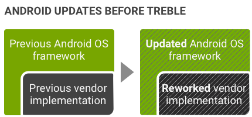
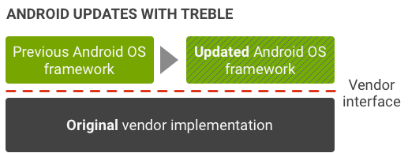

The Android 8.0 release includes Project Treble, a major re-architect of the Android OS framework designed to make it easier, faster, and less costly for manufacturers to update devices to a new version of Android. Treble is for all new devices launching with Android 8.0 and beyond (the new architecture is already running on the Developer Preview for Pixel phones).
Project Treble separates the vendor implementation (device-specific, lower-level software written by silicon manufacturers) from the Android OS framework via a new vendor interface.
In Android 7.x and earlier, no formal vendor interface exists so device makers must update large portions of the Android code to move a device to a newer version of Android:
Figure 1. Pre-Treble Android update environment
With Treble, a new stable vendor interface provides access to the hardware-specific parts of Android, enabling device makers to deliver new Android releases simply by updating the Android OS framework—without any additional work required from the silicon manufacturers:
Figure 2. Treble Android update environment
To ensure forward compatibility of vendor implementations, the new vendor interface is validated by the Vendor Test Suite (VTS), which is analogous to the Compatibility Test Suite (CTS). You can use VTS to automate HAL and OS kernel testing in both pre-Treble and Treble environments.
For details on the new Treble architecture, see the following sections: